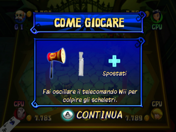

10 |
Gameplay |
 |
Scegli un personaggio ed entra nel castello dove dovrai affrontare mini giochi e sfide mozzafiato. Spostati sulle caselle del percorso con le sue innumerevoli sorprese e cerca le pergamene magiche per indovinare la parola segreta e avere accesso al tesoro nascosto! Schermata "Difficoltà" Qui puoi decidere il livello di difficoltà della partita: puoi scegliere tra 3 livelli (Facile, Normale e Difficile). Più la difficoltà cresce, più difficili saranno le parole segrete da indovinare. Inoltre, mano a mano che procedi nella modalità Avventura, i mini giochi diventeranno sempre più difficili. Schermate "Scegli personaggio" e "Scegli numero giocatori" In questa schermata è possibile scegliere il personaggio con cui giocare e il numero di giocatori che saranno comandati dal computer. Puoi premere il pulsante B per annullare la selezione dopo aver scelto un personaggio. Dalla schermata "Scegli personaggio" puoi accedere alla schermata "Scegli numero giocatori". Puoi scegliere tra le quattro seguenti possibilità: 1 giocatore e 3 computer (CPU) 2 giocatori e 2 computer (CPU) 3 giocatori e 1 computer (CPU) 4 giocatori Partecipa a una partita in corso Un giocatore può decidere di sostituire un giocatore CPU in qualsiasi momento. Per far ciò, basta che il giocatore colleghi il telecomando Wii alla console Wii (se non lo ha già fatto prima). Il nuovo giocatore rimpiazzerà il giocatore del computer corrispondente al led giocatore sul suo telecomando Wii. Ad esempio il telecomando Wii collegato alla console Wii come terzo telecomando Wii rimpiazzerà il giocatore numero 3 controllato dal computer. Il nuovo giocatore comincerà a giocare con il numero di monete raccolte fino a quel momento dal giocatore CPU. Tuttavia un giocatore che prende parte a una partita non potrà più essere sostituito da un giocatore CPU. Schermata "Come giocare"  Prima dell’inizio di ogni mini gioco, è mostrata una schermata con le istruzioni su come giocare. Sblocca mini giochi All’inizio della partita non tutti i mini giochi sono disponibili. Giocando alla modalità Avventura, ne sbloccherai altri che potrai in seguito scegliere nella modalità Mini giochi. |
 |
 |
 |